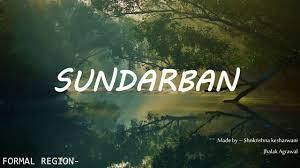

hough Sajek is located in the Rangamati district, it is much easier to travel with Dighinalala of Khagrachari district. So first you have to come to Khagrachari. If you want to go to Khagrachari from Dhaka,

There are many tourist spots in Bangladesh. But the main tourist spots of Bangladesh are Kuakata sea beach, Sundarban, Cox’s Bazar, Tea garden at Srimangal, Saint Martins Island etc. Saint Martins Island is one of the best tourist spot.
In early 2005, Laskar Muqsudur Rahman, Deputy Conservator of Forests, Sylhet Forest Division, observed that Jaflong that he heard in his boyhood as the 'lungs' of Greater Sylhet was at stake due to on going

The phenomena that have made Kuakata a fantasy kingdom arresting the attention of the tourists of home and abroad are its picturesque natural beauty, sandy and foamy beaches, blue sky, evergreen forest,

Laboni beach is the longest and main beach of Cox’s Bazar. It is the closest sea beach to the town. At here a traveler can easily enjoy the scenic beauty of Bay of Bengal Sea. Its a place for enjoyment,I

The Sundarbans is a vast forest on the coast of the Bay of Bengal. The Sundarban is located in both Bangladesh and West Bengal, India. In the Bangladesh part, you can enter through Khulna and Mongla. The Sundarbans is one of the natural wonders of the world.

hough Sajek is located in the Rangamati district, it is much easier to travel with Dighinalala of Khagrachari district. So first you have to come to Khagrachari. If you want to go to Khagrachari from Dhaka,

There are many tourist spots in Bangladesh. But the main tourist spots of Bangladesh are Kuakata sea beach, Sundarban, Cox’s Bazar, Tea garden at Srimangal, Saint Martins Island etc. Saint Martins Island is one of the best tourist spot.

In early 2005, Laskar Muqsudur Rahman, Deputy Conservator of Forests, Sylhet Forest Division, observed that Jaflong that he heard in his boyhood as the 'lungs' of Greater Sylhet was at stake due to on going